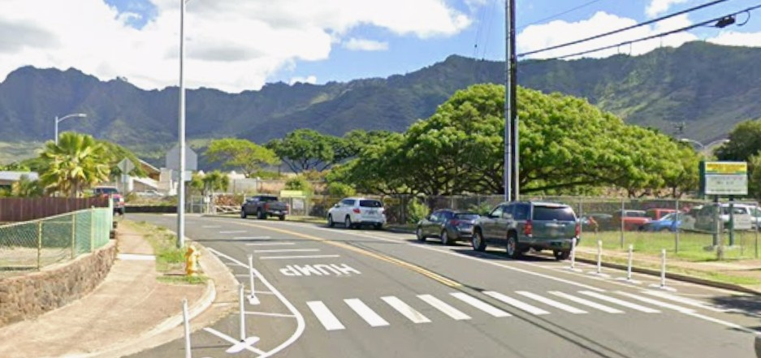

Haleakala Avenue
Place: Haleakala Avenue, Nānākuli, Oʻahu
Type: Residential street / historic place name
Namesake: Puʻu Heleakalā (“snare of the sun”), the ridge rising above Nānākuli
Story it tells: How a street once recorded as Heleakalā Avenue apparently became Haleakala Avenue, obscuring a Leeward Oʻahu place name connected to Māui and the snaring of the sun.

Haleakala Avenue is a residential street in Nānākuli on the leeward coast of Oʻahu. Despite its modern spelling, the road was historically known as Heleakalā Avenue, matching Puʻu Heleakalā, the ridge rising above the community. Early records preserve the older spelling, including a 1930 map and the 1940 United States Census, suggesting that Haleakala is a later alteration rather than the street's original name.
Heleakalā carries a meaning and history distinct from the much more famous Haleakalā on Maui. While Haleakalā means “house of the sun,” Heleakalā has been interpreted as “snare of the sun.” The name is connected with traditions of Māui and the snaring of the sun, a story with deep roots along the Waiʻanae Coast. Hawaiian traditions place Māui and his family in this part of Oʻahu and associate the surrounding landscape with episodes from his life.
Puʻu Heleakalā rises immediately mauka of Nānākuli and separates the valley from neighboring Lualualei. The older name Heleakalā connects the street directly to the landscape above it rather than to the similarly named volcano on Maui.
By the later twentieth century, however, the street had become Haleakala Avenue. The change effectively transformed a local Oʻahu place name into the familiar name of Maui's great volcano. The Hawaiʻi Department of Transportation has since identified Haleakala as an apparent misspelling and proposed restoring Heleakalā, part of broader efforts to improve Hawaiian spelling and diacritical marks on Oʻahu road signs.
The distinction is only a single letter, but it changes the story the street tells. Haleakala points toward Maui and the “house of the sun.” Heleakalā points uphill toward Puʻu Heleakalā and preserves a Nānākuli name and mo‘olelo associated with Māui and the snaring of the sun.